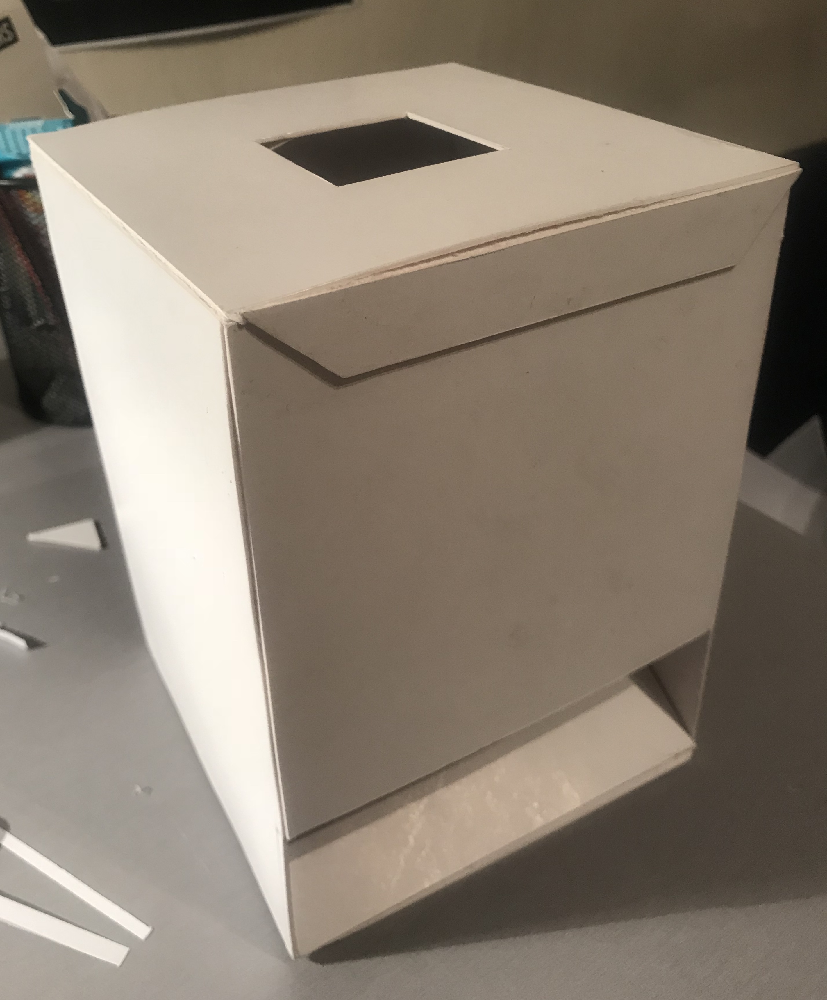

For assignment 4, my interpretation of the brief was to produce something physical which somewhat represented the structure and culture of the internet. Going by my work in assignment 3, I wanted to remain on the same theme of data harvesting. Therefore, I began thinking of ways in which I can physically represent the idea of data harvesting, while expressing the idea that when we use the web, our data and activity is not simply deleted or lost in thin air after we exit the webpage. I ultimately wanted to force the audience to think twice about their internet activity and the degree of ownership and privacy they have over it.
Ultimately, I came up with the idea of the ‘non-disposing bin’. The idea behind this was to create a physical model of a bin. However, when you placed trash into the bin aiming to dispose of it, the bin simply spat the trash back out. This process represents the idea of data harvesting, and the concept that your online activity and data is not just vanishing or being erased afterwards. Instead, the data ultimately ends up somewhere and is often used to return tailored content back at you.
I began the development process as I do with any physical modelling process, by sketching prototypes. Once I came up with the desired prototype, I sketched out specific measurements and planned out which materials would be best suitable for the model. I decided to use card to make the model as it is easy to cut and bend, which would make it easy to make the cubed shape model. As well as this, using card kept the expenses low.
Once I had the entire plan sketched out, I used adobe illustrator to create a rubbish bin pattern to stick onto the exterior of my model which I then printed out. Following that, I bought the card from the resource center and began cutting out the body of the model. After cutting out the main body, I cut out the chute which would make the disposed items spit back out. From there, I began constructing my model using PVA glue to hold the tabs together. After constructing the physical model, I cut out the bin patterns which I had previously printed off and used glue to stick them on the exterior of the model giving it a visual look of being a rubbish bin.
